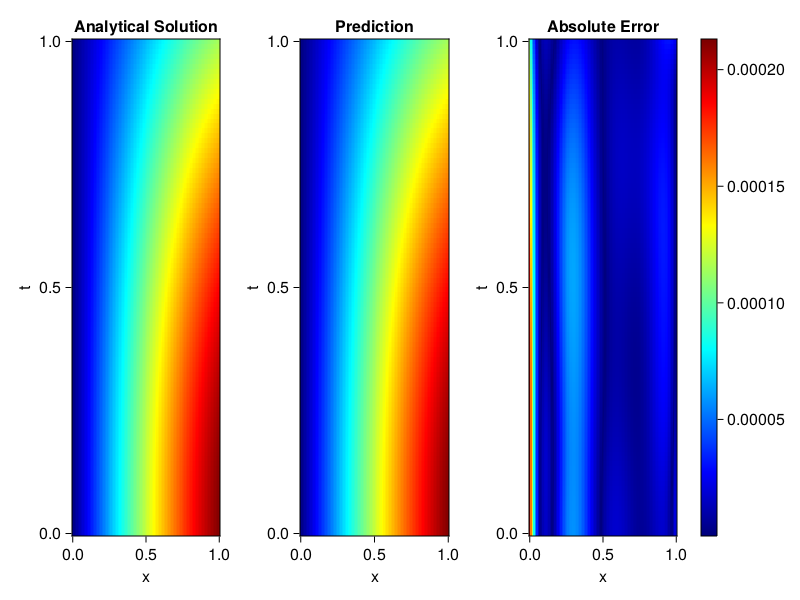

Inverse problem for the wave equation with unknown velocity field
We are going to sovle the wave equation.
using Sophon, ModelingToolkit, IntervalSets
using Optimization, OptimizationOptimJL
@parameters x, t
@variables u(..), c(..)
Dₜ = Differential(t)
Dₜ² = Differential(t)^2
Dₓ² = Differential(x)^2
s(x,t) = abs2(x) * sin(x) * cos(t)
eq = Dₜ²(u(x,t)) ~ c(x) * Dₓ²(u(x,t)) + s(x,t)
bcs = [u(x, 0) ~ sin(x),
Dₜ(u(x, 0)) ~ 0,
u(0, t) ~ 0,
u(1, t) ~ sin(1) * cos(t)]
domains = [t ∈ Interval(0.0, 1.0),
x ∈ Interval(0.0, 1.0)]
@named wave = PDESystem(eq, bcs, domains, [t,x], [u(x,t),c(x)])\[ \begin{align} \frac{\mathrm{d}}{\mathrm{d}t} \frac{\mathrm{d}}{\mathrm{d}t} u\left( x, t \right) =& c\left( x \right) \frac{\mathrm{d}}{\mathrm{d}x} \frac{\mathrm{d}}{\mathrm{d}x} u\left( x, t \right) + \cos\left( t \right) \left|x\right|^{2} \sin\left( x \right) \end{align} \]
Here the velocity field $c(x)$ is unknown, we will approximate it with a neural network.
pinn = PINN(u = FullyConnected((2,16,16,16,1), sin),
c = FullyConnected((1,16,16,1), tanh))
sampler = QuasiRandomSampler(500,100)
strategy = NonAdaptiveTraining(1, (10,10,1,1))NonAdaptiveTraining{Int64, NTuple{4, Int64}}(1, (10, 10, 1, 1))Next we generate some data of $u(x,t)$. Here we place two sensors at $x=0.1$ and $x=0.5$.
ū(x,t) = sin(x) * cos(t)
x_data = hcat(fill(0.1, 1, 50), fill(0.5, 1, 50))
t_data = repeat(range(0.0, 1.0, length = 50),2)'
input_data = [x_data; t_data]
u_data = ū.(x_data, t_data)1×100 Matrix{Float64}:
0.0998334 0.0998126 0.0997503 0.0996464 … 0.275281 0.267213 0.259035Finally we construct the inverse problem and solve it.
additional_loss(phi, θ) = sum(abs2, phi.u(input_data, θ.u) .- u_data)
prob = Sophon.discretize(wave, pinn, sampler, strategy; additional_loss=additional_loss)
@time res = Optimization.solve(prob, BFGS(), maxiters=1000)u: ComponentVector{Float64}(u = (layer_1 = (weight = [-0.20872697943914575 0.6358693465258051; -0.8960954581745906 -1.092682539228683; … ; 0.4224257184396527 1.1191216381548612; 0.7923793419394447 0.6097140190588988], bias = [0.2893214577424563; -0.3572048250377747; … ; 0.09327364956691848; 0.15005494535618422;;]), layer_2 = (weight = [-0.2017796420550116 0.29628095389560055 … 0.06608386098740401 -0.4606808477964392; -0.18463824914806434 0.2509927502420958 … 0.07992478468635754 0.6465771797680645; … ; 0.4700806572068527 -0.07624079663348168 … 0.1592110333061409 -0.5388200896232123; 0.09107326611937328 0.226909818712113 … -0.3178416499211446 0.2965708398668146], bias = [-0.12858807937426686; -0.267373637128827; … ; -0.03703195597297448; 0.19435080002432514;;]), layer_3 = (weight = [-0.5419639509386092 -0.28250291025597307 … -0.029276800781266307 0.024699428024861848; 0.35304383291805147 -0.4575053099315661 … -0.11048665135016521 -0.08950946519938066; … ; -0.46196811653205194 -0.36683218222431885 … -0.41183320236477194 -0.3127188852066858; -0.5017351276274311 0.3934105963433669 … -0.367870348207878 -0.49782558452741293], bias = [0.2193826958161594; -0.03355075546138072; … ; 0.01492598297893444; -0.09752153901509115;;]), layer_4 = (weight = [-0.21587364017471025 0.049285242073522556 … -0.23393295420315555 -0.24125448718407663], bias = [-0.07841399652344046;;])), c = (layer_1 = (weight = [2.0306794323066417; -0.7725744084035755; … ; -0.5858745205393235; 0.22322371186843315;;], bias = [0.04517113651875872; 0.003388956481896672; … ; 0.222347435588123; 0.25987794812658516;;]), layer_2 = (weight = [-0.26289774386513537 0.11258675365278217 … -0.03384277020755423 0.30427249368420445; 0.29239337737538174 -0.6294304990225329 … 0.4737091753062393 -0.5230286214824376; … ; 0.33577716039791616 0.3244572026652824 … 0.3550863723078484 -0.7151366353451725; 0.45399232820149094 0.6658808069387429 … -0.7241504222403475 0.3714635438358138], bias = [0.2364480975117583; 0.05135996914521904; … ; 0.17931274907276487; 0.0395019231629236;;]), layer_3 = (weight = [-0.5102689461640693 0.2538577790672938 … -0.7034761088940454 0.30189118892847494], bias = [-0.4772536335332063;;])))Let's visualize the predictted solution and inferred velocity
using CairoMakie
ts = range(0, 1; length=100)
xs = range(0, 1; length=100)
u_pred = [pinn.phi.u([x, t], res.u.u)[1] for x in xs, t in ts]
c_pred = [pinn.phi.c([x], res.u.c)[1] for x in xs]
u_true = [ū(x, t) for x in xs, t in ts]
c_true = 1 .+ abs2.(xs) |> vec
axis = (xlabel="x", ylabel="t", title="Analytical Solution")
fig, ax1, hm1 = heatmap(xs, ts, u_true, axis=axis; colormap=:jet)
ax2, hm2= heatmap(fig[1, end+1], xs, ts, u_pred, axis= merge(axis, (;title = "Prediction")); colormap=:jet)
ax3, hm3 = heatmap(fig[1, end+1], xs, ts, abs.(u_true .- u_pred), axis= merge(axis, (;title = "Absolute Error")); colormap=:jet)
Colorbar(fig[:, end+1], hm3)
fig
fig, ax = lines(xs, c_pred)
lines!(ax, xs, c_true)
fig